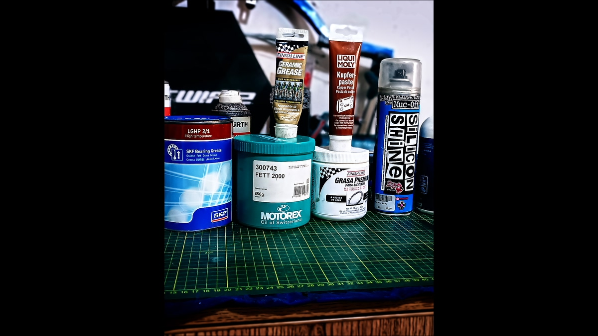

The Right Grease in the Right Place
Workshop gallery
Real workshop photos — application, products and typical use cases. (No resizing; SEO tagging only.)




Grease is not “just grease”. In tribology, you’re selecting a base oil + thickener + additive package that must match load, speed, temperature, water exposure and material compatibility. A mismatch can cause drag, washout, corrosion or premature bearing wear.
What actually fails when grease choice is wrong
- Washed-out bearings after rain or pressure washing (poor water resistance).
- Metal-to-metal contact under high load (insufficient film strength / EP protection).
- Seal damage or swelling (compatibility issues).
- Galvanic corrosion on dissimilar metals (no barrier / wrong compound).
- Stuck fasteners from oxidation, heat cycles or salt exposure (no anti-seize where needed).
Quick selection logic (workshop rule-set)
We classify each point on the bike by its tribological regime:
- Rolling bearings (hub, headset, BB bearings): prioritize film stability, water resistance, and mechanical shear stability.
- Sliding interfaces (seatpost/frame, axle interfaces): prioritize anti-corrosion barrier and correct friction behavior.
- Threads (pedals, bolts): choose between assembly grease vs anti-seize depending on heat, corrosion risk and service interval.
Where each product type belongs
Bearing grease: for rolling elements — stable under shear, good rust inhibition, consistent viscosity.
Assembly grease: for general assembly, moderate protection, clean handling.
Anti-seize (copper/ceramic): for heat + corrosion + long service intervals; prevents seizure but can alter torque feel.
Practical examples
- Hub bearings: pack correctly (not overfilled), focus on sealing and water resistance.
- Seatpost: barrier compound to prevent bonding (especially alloy/carbon rules vary).
- Pedal threads: grease for normal conditions; anti-seize if the bike lives near salt/heat/corrosion.
Bottom line
If you want reliability, stop treating lubrication as a single-product problem. A small “arsenal” chosen with tribology in mind is cheaper than replacing bearings, bolts and interfaces.